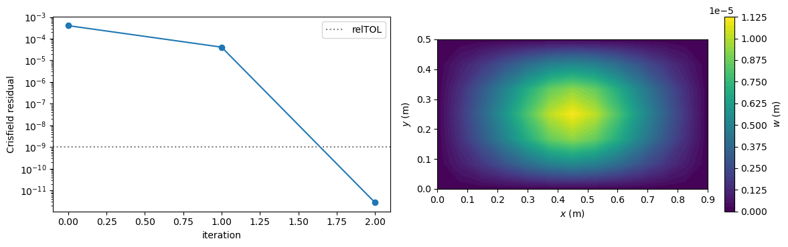
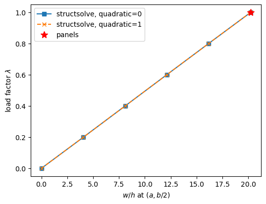

Nonlinear static analysis with structsolve#
Two nonlinear static problems solved with structsolve.Analysis of structsolve:
a simply supported plate compressed along \(x\) with a small transverse force at the centre, against the linearised solution and the amplification ceiling of the buckling load; the same model is checked in
tests/test_static_axial_load_nonlinear.py(test_static);a cantilever plate under a follower pressure, against the reference values of the plate_clpt_donnell model of panels and the hand-written Newton-Raphson iterations of the example Follower pressure; the same model is checked in
tests/test_follower_pressure_structsolve.py.
Theory#
structsolve.Analysis solves the equilibrium \(\boldsymbol{R}(\boldsymbol{u}, \lambda) =
\boldsymbol{F}_{int}(\boldsymbol{u}) - \lambda \boldsymbol{F}_{ext} =
\boldsymbol{0}\) with the full Newton-Raphson method and the tangent stiffness matrix
given by four callables that loop over the elements and assemble: calc_fext returns \(\lambda \boldsymbol{F}_{ext}\), calc_fint the internal forces of update_fint, calc_kC returns \(\boldsymbol{K}_{C0}\), or \(\boldsymbol{K}_{C0} + \boldsymbol{K}_{CNL} + \boldsymbol{K}_{GNL}\) with NLgeom=True, and calc_kG returns \(\boldsymbol{K}_G\), such that calc_kC + calc_kG is \(\boldsymbol{K}_T\). structsolve imposes no boundary condition itself: the
callables here work on the unknown degrees of freedom bu, receiving c = u[bu] and returning vectors and matrices restricted to bu. The convergence criterion is, by default, Crisfield’s: the residual and the reference forces, the external and the internal forces, are scaled with the diagonal of the linear stiffness matrix over the free degrees of freedom, and the iterations stop when their ratio is below Analysis.relTOL = 1e-9. The scaled norm does not depend on the units of the
degrees of freedom, which mix displacements, slopes and \(w_{,xy}\). A tangent stiffness matrix that is the exact Jacobian of the internal forces squares this residual at each iteration close to the solution.
[1]:
%matplotlib inline
import numpy as np
from numpy import isclose
import matplotlib.pyplot as plt
from scipy.sparse import coo_matrix
from scipy.sparse.linalg import eigsh, spsolve
from composites import isotropic_plate
from structsolve import Analysis
from structsolve.convergence import crisfield_weights, crisfield_zeta
from bfscplate2d import (BFSCPlate2D, update_KC0, update_KCNL, update_KG,
update_fint, update_fext_follower, update_KCfollower, DOF, DOUBLE,
INT, KC0_SPARSE_SIZE, KCNL_SPARSE_SIZE, KG_SPARSE_SIZE,
KCfollower_SPARSE_SIZE)
from bfscplate2d.quadrature import get_points_weights
Compressed plate with a small transverse force#
An isotropic plate, \(a = 0.9\) m, \(b = 0.5\) m, \(h = 1\) mm, \(E = 70\) GPa, \(\nu = 0.3\), meshed with 13 by 7 nodes and 7 integration points per direction, which integrate the internal forces and \(\boldsymbol{K}_{CNL}\) exactly. The edges are simply supported: \(w\) and its derivative along the edge are zero, \(w_{,y}\) on the edges \(x\) = constant and \(w_{,x}\) on the edges \(y\) = constant, such that \(w\) vanishes along the whole edge
and not only at the nodes. \(v = 0\) on the edges \(x\) = constant and \(u = 0\) along \(x = a/2\) remove the rigid-body motions. The test tests/test_static_axial_load_nonlinear.py uses the same model.
[2]:
# number of nodes
nx = 13
ny = 7
# geometry
a = 0.9
b = 0.5
# material properties
E = 0.7e11
nu = 0.3
h = 0.001
points, weights = get_points_weights(nint=7)
lam = isotropic_plate(thickness=h, E=E, nu=nu)
xlin = np.linspace(0, a, nx)
ylin = np.linspace(0, b, ny)
xmesh, ymesh = np.meshgrid(xlin, ylin)
ncoords = np.vstack((xmesh.T.flatten(), ymesh.T.flatten())).T
x = ncoords[:, 0]
y = ncoords[:, 1]
nids = 1 + np.arange(ncoords.shape[0])
nid_pos = dict(zip(nids, np.arange(len(nids))))
nids_mesh = nids.reshape(nx, ny)
n1s = nids_mesh[:-1, :-1].flatten()
n2s = nids_mesh[1:, :-1].flatten()
n3s = nids_mesh[1:, 1:].flatten()
n4s = nids_mesh[:-1, 1:].flatten()
num_elements = len(n1s)
print('num_elements', num_elements)
N = DOF*nx*ny
KC0r = np.zeros(KC0_SPARSE_SIZE*num_elements, dtype=INT)
KC0c = np.zeros(KC0_SPARSE_SIZE*num_elements, dtype=INT)
KC0v = np.zeros(KC0_SPARSE_SIZE*num_elements, dtype=DOUBLE)
KCNLr = np.zeros(KCNL_SPARSE_SIZE*num_elements, dtype=INT)
KCNLc = np.zeros(KCNL_SPARSE_SIZE*num_elements, dtype=INT)
KCNLv = np.zeros(KCNL_SPARSE_SIZE*num_elements, dtype=DOUBLE)
KGr = np.zeros(KG_SPARSE_SIZE*num_elements, dtype=INT)
KGc = np.zeros(KG_SPARSE_SIZE*num_elements, dtype=INT)
KGv = np.zeros(KG_SPARSE_SIZE*num_elements, dtype=DOUBLE)
elements = []
for k, (n1, n2, n3, n4) in enumerate(zip(n1s, n2s, n3s, n4s)):
plate = BFSCPlate2D()
plate.n1, plate.n2, plate.n3, plate.n4 = n1, n2, n3, n4
plate.c1 = DOF*nid_pos[n1]
plate.c2 = DOF*nid_pos[n2]
plate.c3 = DOF*nid_pos[n3]
plate.c4 = DOF*nid_pos[n4]
plate.ABD = lam.ABD
plate.lex = a/(nx - 1)
plate.ley = b/(ny - 1)
plate.init_k_KC0 = k*KC0_SPARSE_SIZE
plate.init_k_KCNL = k*KCNL_SPARSE_SIZE
plate.init_k_KG = k*KG_SPARSE_SIZE
update_KC0(plate, points, weights, KC0r, KC0c, KC0v)
elements.append(plate)
KC0 = coo_matrix((KC0v, (KC0r, KC0c)), shape=(N, N)).tocsc()
# simply supported edges, v = 0 at x = 0 and x = a, u = 0 along x = a/2
edges_x = isclose(x, 0) | isclose(x, a)
edges_y = isclose(y, 0) | isclose(y, b)
bk = np.zeros(N, dtype=bool)
bk[6::DOF] = edges_x | edges_y
bk[8::DOF] = edges_x
bk[7::DOF] = edges_y
bk[3::DOF] = edges_x
bk[0::DOF] = isclose(x, a/2)
bu = ~bk
print('unknown degrees of freedom', bu.sum())
KC0uu = KC0[bu, :][:, bu]
num_elements 72
unknown degrees of freedom 813
The assembly of the internal forces, of \(\boldsymbol{K}_{CNL} + \boldsymbol{K}_{GNL}\) and of \(\boldsymbol{K}_G\) at a displacement vector, and the callables of structsolve built on them. The callable calc_fint also keeps the load factor and the internal forces of each iteration, for the residual history:
[3]:
def calc_fint(u):
fint = np.zeros(N)
for plate in elements:
update_fint(u, plate, points, weights, fint)
return fint
def calc_KCNL(u):
"""K_CNL + K_GNL at u"""
KCNLv[:] = 0
for plate in elements:
update_KCNL(u, plate, points, weights, KCNLr, KCNLc, KCNLv)
return coo_matrix((KCNLv, (KCNLr, KCNLc)), shape=(N, N)).tocsc()
def calc_KG(u):
"""K_G at u"""
KGv[:] = 0
for plate in elements:
update_KG(u, plate, points, weights, KGr, KGc, KGv)
return coo_matrix((KGv, (KGr, KGc)), shape=(N, N)).tocsc()
class Callables(object):
"""The callables of structsolve.Analysis under the external forces
``fext``, on the unknown degrees of freedom ``bu``"""
def __init__(self, fext):
self.fext = fext
self.iterations = []
def expand(self, c):
u = np.zeros(N)
u[bu] = c
return u
def calc_fext(self, inc=1., silent=False):
return inc*self.fext[bu]
def calc_fint(self, c, inc=1., silent=False):
fint = calc_fint(self.expand(c))[bu]
self.iterations.append((inc, fint))
return fint
def calc_kC(self, c=None, NLgeom=False, silent=False):
if not NLgeom:
return KC0uu
return (KC0 + calc_KCNL(self.expand(c)))[bu, :][:, bu]
def calc_kG(self, c=None, NLgeom=False, silent=False):
return calc_KG(self.expand(c))[bu, :][:, bu]
The axial compression \(P = 300\) N is applied as equal nodal forces \(\pm P/n_y\) on the edges \(x = 0\) and \(x = a\), and the transverse force \(F_t = 0.01\) N at the centre. The first buckling load \(P_{cr}\) comes from the linear buckling problem \((\boldsymbol{K}_{C0} + \lambda \boldsymbol{K}_G)\boldsymbol{\phi} = \boldsymbol{0}\), with \(\boldsymbol{K}_G\) of the linear static solution of \(P\) alone:
[4]:
load = 300. # N
transverse = 0.01 # N
fext = np.zeros(N)
fext[0::DOF][isclose(x, 0)] = +load/ny
fext[0::DOF][isclose(x, a)] = -load/ny
ftrans = np.zeros(N)
ftrans[6::DOF][isclose(x, a/2) & isclose(y, b/2)] = transverse
u_axial = np.zeros(N)
u_axial[bu] = spsolve(KC0uu, fext[bu])
KG = calc_KG(u_axial)
KGuu = KG[bu, :][:, bu]
eigvals, eigvecsu = eigsh(A=KGuu, k=5, which='SM', M=KC0uu, tol=1e-6,
sigma=1., mode='cayley')
eigvals = -1./eigvals
load_cr = eigvals[0]*load
print('P_cr = %.4f N, P/P_cr = %.4f' % (load_cr, load/load_cr))
P_cr = 501.7189 N, P/P_cr = 0.5979
Below \(P_{cr}\) and for a deflection small compared with the thickness, the membrane stretching of the von Kármán terms is negligible and the answer is the linearised one, the transverse force resisted by the bending stiffness reduced by the geometric stiffness of the axial load,
Its amplification over the response to the transverse force alone, \(\boldsymbol{K}_{C0}^{-1} \boldsymbol{F}_t\), is below the single-mode ceiling \(1/(1 - P/P_{cr})\), since a point load excites many modes:
[5]:
u_lin = np.zeros(N)
u_lin[bu] = spsolve((KC0 + KG)[bu, :][:, bu], ftrans[bu])
w_lin = u_lin[6::DOF].max()
u_bend = np.zeros(N)
u_bend[bu] = spsolve(KC0uu, ftrans[bu])
w_bend = u_bend[6::DOF].max()
print('w_max of the transverse force alone: %.6e m' % w_bend)
print('w_max linearised: %.6e m' % w_lin)
w_max of the transverse force alone: 6.303565e-06 m
w_max linearised: 1.110397e-05 m
structsolve solves the nonlinear equilibrium under the combined loads in one increment. Crisfield’s relative residual of each iteration is recomputed from the internal forces kept by calc_fint:
[6]:
callables = Callables(fext + ftrans)
an = Analysis(calc_fext=callables.calc_fext,
calc_fint=callables.calc_fint,
calc_kC=callables.calc_kC,
calc_kG=callables.calc_kG)
an.initialInc = 1.
an.maxInc = 1.
increments_done, cs = an.static(NLgeom=True)
print('converged load factors', increments_done)
u = callables.expand(cs[-1])
weights_crisfield = crisfield_weights(KC0uu)
f = (fext + ftrans)[bu]
history = [crisfield_zeta(inc*f - fint, inc*f, fint, weights_crisfield)
for inc, fint in callables.iterations if inc == 1.]
for i, zeta in enumerate(history):
print('iteration %d, Crisfield residual %.3e' % (i, zeta))
Started Non-Linear Static Analysis
___________________________________________
Newton-Raphson solver
___________________________________________
Initializing...
Step 1, attempting load factor 1.00000
Iteration: 1, max(|R|) = 3.145e-03, zeta = 4.009e-04
Iteration: 2, max(|R|) = 2.297e-03, zeta = 4.095e-05
Iteration: 3, max(|R|) = 1.740e-11, zeta = 2.785e-12
Converged at load factor 1.00000
Finished Non-Linear Static Analysis
load factor 1.00000
converged load factors [1.0]
iteration 0, Crisfield residual 4.009e-04
iteration 1, Crisfield residual 4.095e-05
iteration 2, Crisfield residual 2.785e-12
[7]:
w = u[6::DOF].reshape(nx, ny).T
w_max = w.max()
amplification = w_max/w_bend
ceiling = 1./(1. - load/load_cr)
print('w_max/h = %.4f' % (w_max/h))
print()
print('%-22s %14s %14s %12s' % ('', 'structsolve', 'reference', 'rel. diff'))
print('%-22s %14.6e %14.6e %12.2e' % ('w_max (m), linearised', w_max, w_lin,
w_max/w_lin - 1))
print('%-22s %14.4f %14.4f %12.2e' % ('amplification, ceiling',
amplification, ceiling,
amplification/ceiling - 1))
w_max/h = 0.0111
structsolve reference rel. diff
w_max (m), linearised 1.110364e-05 1.110397e-05 -2.95e-05
amplification, ceiling 1.7615 2.4872 -2.92e-01
[8]:
fig, axes = plt.subplots(1, 2, figsize=(12, 3.8))
axes[0].semilogy(history, 'o-')
axes[0].axhline(an.relTOL, color='gray', ls=':', label='relTOL')
axes[0].set_xlabel('iteration')
axes[0].set_ylabel('Crisfield residual')
axes[0].legend()
axes[1].set_aspect('equal')
cf = axes[1].contourf(xmesh, ymesh, w, levels=50)
fig.colorbar(cf, ax=axes[1], label='$w$ (m)')
axes[1].set_xlabel('$x$ (m)')
axes[1].set_ylabel('$y$ (m)')
plt.tight_layout()
plt.show()

\(P = 300\) N is 0.598 of \(P_{cr} = 501.72\) N, and the deflection stays small, \(w_{max}/h = 0.0111\): the solution of structsolve equals the linearised one within \(3.0 \times 10^{-5}\). The amplification over the response to the transverse force alone, 1.76, is between 1 and the single-mode ceiling 2.49. structsolve converges in three iterations; the last one takes Crisfield’s residual from \(4.1 \times 10^{-5}\) to \(2.8 \times 10^{-12}\), below its square, the quadratic convergence of a tangent stiffness matrix that is the Jacobian of the internal forces. The first iterations are not a fair measure of the convergence rate, since the residual is normalised by the whole external load, whose axial part may be in equilibrium after the first iteration while the out-of-plane part is not.
Follower pressure#
A follower pressure stays normal to the deformed mid-surface and acts on its deformed area [1, 2]. Its force vector \(\boldsymbol{F}_p(\boldsymbol{u})\) depends on the displacements, and its derivative, the load stiffness matrix \(\boldsymbol{K}_F = -\partial \boldsymbol{F}_p/\partial \boldsymbol{u}\), enters the tangent stiffness matrix. structsolve passes the load factor inc to the callables that declare it. With the load factor \(\lambda\), calc_fext gives the dead part
\(\lambda \boldsymbol{F}_p(\boldsymbol{0})\), calc_fint adds \(-\lambda (\boldsymbol{F}_p(\boldsymbol{u}) -
\boldsymbol{F}_p(\boldsymbol{0}))\), the part of update_fext_follower with reference=0, to the internal forces, and calc_kC adds the load stiffness matrix of \(\lambda p\), such that the residual of structsolve is
and its Jacobian \(\boldsymbol{K}_{C0} + \boldsymbol{K}_{CNL} + \boldsymbol{K}_{GNL} + \boldsymbol{K}_G + \boldsymbol{K}_F\), unsymmetric for the free edges of the cantilever and solved with LU factorisations.
A helper class builds the mesh of \(n_x\) by \(n_y\) nodes, with 6 integration points per direction, gives the pressure p of each element at its integration points and assembles \(\boldsymbol{K}_{C0}\); boundary_flags constrains, along an edge, a displacement and its derivative along the edge:
[9]:
NINT = 6
TRUNCATIONS = [0, 1]
class Mesh(object):
"""Rectangular mesh of ``nx`` by ``ny`` nodes over ``a`` by ``b``, with
the assembly of the vectors and matrices used below"""
def __init__(self, nx, ny, a, b, lam, nint=NINT):
self.a, self.b = a, b
self.points, self.weights = get_points_weights(nint=nint)
xlin = np.linspace(0, a, nx)
ylin = np.linspace(0, b, ny)
xmesh, ymesh = np.meshgrid(xlin, ylin)
ncoords = np.vstack((xmesh.T.flatten(), ymesh.T.flatten())).T
self.x = ncoords[:, 0]
self.y = ncoords[:, 1]
nids_mesh = np.arange(nx*ny).reshape(nx, ny)
n1s = nids_mesh[:-1, :-1].flatten()
n2s = nids_mesh[1:, :-1].flatten()
n3s = nids_mesh[1:, 1:].flatten()
n4s = nids_mesh[:-1, 1:].flatten()
self.N = DOF*nx*ny
self.elements = []
for k, (n1, n2, n3, n4) in enumerate(zip(n1s, n2s, n3s, n4s)):
plate = BFSCPlate2D()
plate.n1, plate.n2, plate.n3, plate.n4 = n1, n2, n3, n4
plate.c1 = DOF*n1
plate.c2 = DOF*n2
plate.c3 = DOF*n3
plate.c4 = DOF*n4
plate.ABD = lam.ABD
plate.lex = a/(nx - 1)
plate.ley = b/(ny - 1)
plate.init_k_KC0 = k*KC0_SPARSE_SIZE
plate.init_k_KCNL = k*KCNL_SPARSE_SIZE
plate.init_k_KG = k*KG_SPARSE_SIZE
plate.init_k_KCfollower = k*KCfollower_SPARSE_SIZE
self.elements.append(plate)
self.h = lam.h
def pressure(self, plate, func):
"""``p[i, j]`` at ``xi = points[i]``, ``eta = points[j]``"""
x1, y1 = self.x[plate.n1], self.y[plate.n1]
x = x1 + plate.lex*(self.points + 1)/2
y = y1 + plate.ley*(self.points + 1)/2
p = func(x[:, None], y[None, :])*np.ones((x.size, y.size))
return np.ascontiguousarray(p, dtype=DOUBLE)
def KC0(self):
n = KC0_SPARSE_SIZE*len(self.elements)
r = np.zeros(n, dtype=INT)
c = np.zeros(n, dtype=INT)
v = np.zeros(n, dtype=DOUBLE)
for plate in self.elements:
update_KC0(plate, self.points, self.weights, r, c, v)
return coo_matrix((v, (r, c)), shape=(self.N, self.N)).tocsc()
def boundary_flags(m, edges):
"""Constrained degrees of freedom: for each edge in ``edges``, a dict
``{'x1': 'w', ...}`` of the displacements set to zero along it, with
their derivatives along the edge"""
bk = np.zeros(m.N, dtype=bool)
on = {'x1': isclose(m.x, 0), 'x2': isclose(m.x, m.a),
'y1': isclose(m.y, 0), 'y2': isclose(m.y, m.b)}
along = {'x': {'u': (0, 2), 'v': (3, 5), 'w': (6, 8)},
'y': {'u': (0, 1), 'v': (3, 4), 'w': (6, 7)}}
for edge, fields in edges.items():
for f in fields:
for i in along[edge[0]][f]:
bk[i::DOF] |= on[edge]
return bk
The callables of the follower pressure func(x, y) times the load factor, for the truncation quadratic of the area vector:
[10]:
class FollowerCallables(object):
"""The callables of structsolve.Analysis for the mesh ``m`` under the
follower pressure ``func(x, y)`` times the load factor, on the unknown
degrees of freedom ``bu``"""
def __init__(self, m, bu, func, quadratic):
self.m = m
self.bu = bu
self.quadratic = quadratic
self.pressures = [m.pressure(plate, func) for plate in m.elements]
self.KC0 = m.KC0()
num_elements = len(m.elements)
self.KCNLr = np.zeros(KCNL_SPARSE_SIZE*num_elements, dtype=INT)
self.KCNLc = np.zeros(KCNL_SPARSE_SIZE*num_elements, dtype=INT)
self.KCNLv = np.zeros(KCNL_SPARSE_SIZE*num_elements, dtype=DOUBLE)
self.KGr = np.zeros(KG_SPARSE_SIZE*num_elements, dtype=INT)
self.KGc = np.zeros(KG_SPARSE_SIZE*num_elements, dtype=INT)
self.KGv = np.zeros(KG_SPARSE_SIZE*num_elements, dtype=DOUBLE)
self.KCfr = np.zeros(KCfollower_SPARSE_SIZE*num_elements, dtype=INT)
self.KCfc = np.zeros(KCfollower_SPARSE_SIZE*num_elements, dtype=INT)
self.KCfv = np.zeros(KCfollower_SPARSE_SIZE*num_elements,
dtype=DOUBLE)
# the dead part of the pressure, the force vector at u = 0
self.fp0 = np.zeros(m.N, dtype=DOUBLE)
for plate, p in zip(m.elements, self.pressures):
update_fext_follower(np.zeros(m.N), plate, m.points, m.weights,
p, self.fp0, quadratic)
def expand(self, c):
u = np.zeros(self.m.N, dtype=DOUBLE)
u[self.bu] = c
return u
def calc_fext(self, inc=1., silent=False):
return inc*self.fp0[self.bu]
def calc_fint(self, c, inc=1., silent=False):
m = self.m
u = self.expand(c)
fint = np.zeros(m.N, dtype=DOUBLE)
for plate, p in zip(m.elements, self.pressures):
update_fint(u, plate, m.points, m.weights, fint)
# minus the part of the follower pressure that depends on u
update_fext_follower(u, plate, m.points, m.weights, -inc*p, fint,
self.quadratic, 0)
return fint[self.bu]
def calc_kC(self, c=None, NLgeom=False, inc=1., silent=False):
bu = self.bu
if not NLgeom:
return self.KC0[bu, :][:, bu]
m = self.m
u = self.expand(c)
self.KCNLv *= 0
self.KCfv *= 0
for plate, p in zip(m.elements, self.pressures):
update_KCNL(u, plate, m.points, m.weights, self.KCNLr,
self.KCNLc, self.KCNLv)
# the load stiffness matrix of the pressure inc*p
update_KCfollower(u, plate, m.points, m.weights, inc*p,
self.KCfr, self.KCfc, self.KCfv,
self.quadratic)
KCNL = coo_matrix((self.KCNLv, (self.KCNLr, self.KCNLc)),
shape=(m.N, m.N))
KCf = coo_matrix((self.KCfv, (self.KCfr, self.KCfc)),
shape=(m.N, m.N))
return (self.KC0 + KCNL + KCf).tocsc()[bu, :][:, bu]
def calc_kG(self, c=None, NLgeom=False, silent=False):
m = self.m
u = self.expand(c)
self.KGv *= 0
for plate in m.elements:
update_KG(u, plate, m.points, m.weights, self.KGr, self.KGc,
self.KGv)
KG = coo_matrix((self.KGv, (self.KGr, self.KGc)), shape=(m.N, m.N))
return KG.tocsc()[self.bu, :][:, self.bu]
The square isotropic cantilever of the example Follower pressure, \(a = b = 0.3\) m, \(h = 2\) mm, \(E = 70\) GPa, \(\nu = 0.3\), 10 by 10 elements, clamped at \(x = 0\), the other edges free, under a uniform follower pressure \(p = 2\) kPa pushing along \(+z\), in five equal load increments:
[11]:
E_c, nu_c, h_c = 70.e9, 0.3, 2.e-3
a_c = b_c = 0.3
nel = 10
mc = Mesh(nx=nel + 1, ny=nel + 1, a=a_c, b=b_c,
lam=isotropic_plate(thickness=h_c, E=E_c, nu=nu_c))
bkc = boundary_flags(mc, {'x1': 'uvw'})
bkc[7::DOF] |= isclose(mc.x, 0)
bkc[9::DOF] |= isclose(mc.x, 0)
buc = ~bkc
func = lambda x, y: 2.e3 + 0*x*y
tip = np.where(isclose(mc.x, a_c) & isclose(mc.y, b_c/2))[0][0]
results = {}
for quadratic in TRUNCATIONS:
fc = FollowerCallables(mc, buc, func, quadratic)
an = Analysis(calc_fext=fc.calc_fext, calc_fint=fc.calc_fint,
calc_kC=fc.calc_kC, calc_kG=fc.calc_kG)
an.initialInc = 0.2
an.maxInc = 0.2
increments_done, cs = an.static(NLgeom=True)
print('quadratic=%d, converged load factors %s' % (quadratic,
np.round(increments_done, 6)))
path = [fc.expand(ci)[DOF*tip + 6]/h_c for ci in cs]
uc = fc.expand(cs[-1])
results[quadratic] = dict(w=uc[DOF*tip + 6]/h_c, u=uc[DOF*tip],
lbd=np.concatenate(([0.], increments_done)),
path=np.concatenate(([0.], path)))
Started Non-Linear Static Analysis
___________________________________________
Newton-Raphson solver
___________________________________________
Initializing...
Step 1, attempting load factor 0.20000
Iteration: 1, max(|R|) = 3.067e+03, zeta = 1.000e+00
Iteration: 2, max(|R|) = 6.677e-02, zeta = 7.519e-02
Iteration: 3, max(|R|) = 5.288e-02, zeta = 8.765e-03
Iteration: 4, max(|R|) = 6.037e-07, zeta = 9.849e-08
Iteration: 5, max(|R|) = 8.899e-12, zeta = 2.621e-12
Converged at load factor 0.20000
Step 2, attempting load factor 0.40000
Iteration: 1, max(|R|) = 6.089e+03, zeta = 1.000e+00
Iteration: 2, max(|R|) = 3.834e-01, zeta = 2.133e-01
Iteration: 3, max(|R|) = 7.699e-01, zeta = 5.523e-02
Iteration: 4, max(|R|) = 4.006e-04, zeta = 3.193e-05
Iteration: 5, max(|R|) = 1.798e-08, zeta = 1.359e-09
Iteration: 6, max(|R|) = 5.338e-11, zeta = 5.848e-12
Converged at load factor 0.40000
Step 3, attempting load factor 0.60000
Iteration: 1, max(|R|) = 5.957e+03, zeta = 1.000e+00
Iteration: 2, max(|R|) = 3.547e-01, zeta = 1.291e-01
Iteration: 3, max(|R|) = 3.354e-01, zeta = 1.320e-02
Iteration: 4, max(|R|) = 9.290e-05, zeta = 5.498e-06
Iteration: 5, max(|R|) = 1.259e-10, zeta = 9.890e-12
Converged at load factor 0.60000
Step 4, attempting load factor 0.80000
Iteration: 1, max(|R|) = 5.926e+03, zeta = 1.000e+00
Iteration: 2, max(|R|) = 2.161e-01, zeta = 5.788e-02
Iteration: 3, max(|R|) = 7.592e-02, zeta = 5.124e-03
Iteration: 4, max(|R|) = 1.771e-06, zeta = 1.092e-07
Iteration: 5, max(|R|) = 2.380e-10, zeta = 1.173e-11
Converged at load factor 0.80000
Step 5, attempting load factor 1.00000
Iteration: 1, max(|R|) = 5.981e+03, zeta = 1.000e+00
Iteration: 2, max(|R|) = 1.306e-01, zeta = 3.192e-02
Iteration: 3, max(|R|) = 2.058e-01, zeta = 1.114e-02
Iteration: 4, max(|R|) = 1.895e-08, zeta = 5.569e-09
Iteration: 5, max(|R|) = 5.378e-10, zeta = 1.587e-11
Converged at load factor 1.00000
Finished Non-Linear Static Analysis
load factor 1.00000
quadratic=0, converged load factors [0.2 0.4 0.6 0.8 1. ]
Started Non-Linear Static Analysis
___________________________________________
Newton-Raphson solver
___________________________________________
Initializing...
Step 1, attempting load factor 0.20000
Iteration: 1, max(|R|) = 3.067e+03, zeta = 1.000e+00
Iteration: 2, max(|R|) = 6.677e-02, zeta = 7.519e-02
Iteration: 3, max(|R|) = 5.288e-02, zeta = 8.765e-03
Iteration: 4, max(|R|) = 6.037e-07, zeta = 9.849e-08
Iteration: 5, max(|R|) = 9.199e-12, zeta = 2.869e-12
Converged at load factor 0.20000
Step 2, attempting load factor 0.40000
Iteration: 1, max(|R|) = 6.089e+03, zeta = 1.000e+00
Iteration: 2, max(|R|) = 3.834e-01, zeta = 2.133e-01
Iteration: 3, max(|R|) = 7.699e-01, zeta = 5.523e-02
Iteration: 4, max(|R|) = 4.006e-04, zeta = 3.193e-05
Iteration: 5, max(|R|) = 1.797e-08, zeta = 1.361e-09
Iteration: 6, max(|R|) = 8.478e-11, zeta = 6.873e-12
Converged at load factor 0.40000
Step 3, attempting load factor 0.60000
Iteration: 1, max(|R|) = 5.957e+03, zeta = 1.000e+00
Iteration: 2, max(|R|) = 3.547e-01, zeta = 1.291e-01
Iteration: 3, max(|R|) = 3.354e-01, zeta = 1.320e-02
Iteration: 4, max(|R|) = 9.290e-05, zeta = 5.498e-06
Iteration: 5, max(|R|) = 2.001e-10, zeta = 1.051e-11
Converged at load factor 0.60000
Step 4, attempting load factor 0.80000
Iteration: 1, max(|R|) = 5.926e+03, zeta = 1.000e+00
Iteration: 2, max(|R|) = 2.161e-01, zeta = 5.788e-02
Iteration: 3, max(|R|) = 7.592e-02, zeta = 5.124e-03
Iteration: 4, max(|R|) = 1.771e-06, zeta = 1.092e-07
Iteration: 5, max(|R|) = 2.190e-10, zeta = 1.282e-11
Converged at load factor 0.80000
Step 5, attempting load factor 1.00000
Iteration: 1, max(|R|) = 5.981e+03, zeta = 1.000e+00
Iteration: 2, max(|R|) = 1.306e-01, zeta = 3.192e-02
Iteration: 3, max(|R|) = 2.058e-01, zeta = 1.114e-02
Iteration: 4, max(|R|) = 1.892e-08, zeta = 5.563e-09
Iteration: 5, max(|R|) = 4.076e-10, zeta = 1.670e-11
Converged at load factor 1.00000
Finished Non-Linear Static Analysis
load factor 1.00000
quadratic=1, converged load factors [0.2 0.4 0.6 0.8 1. ]
No closed-form solution applies to the large deflection of a flat plate under a follower pressure, so the reference values are those of the plate_clpt_donnell model of panels, the same von Kármán strains and area vector discretized with \(m = n = 16\) Bardell functions [3] and \(20 \times 20\) Gauss points, solved with the Newton-Raphson method of structsolve with 10 increments and relTOL = 1e-11. Refining from \(m = n = 12\) changes \(w\) by \(2 \times 10^{-4}\); the
mesh of 10 by 10 elements used here is within \(5 \times 10^{-4}\) of these values (20 by 20 elements: \(5 \times 10^{-5}\)), both converging from below. The values, \(w/h\) and \(u\) at the middle of the free edge \((a, b/2)\), are those stored in the tests as PANELS.
The tip displacements are also compared with those of the hand-written Newton-Raphson iterations of the example Follower pressure, the same model with the same load increments, as printed there (NR).
[12]:
# reference values of the plate_clpt_donnell model of panels, w/h and u (m)
# at (a, b/2) of the cantilever
PANELS = {
'dead': dict(w=20.05040761, u=-3.06710517e-03),
0: dict(w=20.23571166, u=-3.12566486e-03),
1: dict(w=20.23571209, u=-3.12566500e-03),
}
# printed by the example Follower pressure
NR = {0: dict(w=20.22608292, u=-3.12295020e-03), 1: dict(w=20.22608335, u=-3.12295035e-03)}
REFERENCES = [('panels', PANELS), ('NR', NR)]
print('%-22s %12s %12s %10s %14s %14s %10s' % ('reference', 'w/h', 'ref.',
'rel. diff', 'u (m)', 'ref.', 'rel. diff'))
for quadratic in TRUNCATIONS:
w, u_ = results[quadratic]['w'], results[quadratic]['u']
for name, ref in REFERENCES:
wr, ur = ref[quadratic]['w'], ref[quadratic]['u']
print('%-22s %12.8f %12.8f %10.2e %14.8e %14.8e %10.2e' % (
'quadratic=%d, %s' % (quadratic, name), w, wr, w/wr - 1,
u_, ur, u_/ur - 1))
reference w/h ref. rel. diff u (m) ref. rel. diff
quadratic=0, panels 20.22608292 20.23571166 -4.76e-04 -3.12295020e-03 -3.12566486e-03 -8.69e-04
quadratic=0, NR 20.22608292 20.22608292 -1.23e-10 -3.12295020e-03 -3.12295020e-03 8.25e-10
quadratic=1, panels 20.22608335 20.23571209 -4.76e-04 -3.12295035e-03 -3.12566500e-03 -8.69e-04
quadratic=1, NR 20.22608335 20.22608335 1.12e-10 -3.12295035e-03 -3.12295035e-03 -1.18e-09
[13]:
plt.figure(figsize=(6, 4.5))
for quadratic, style in zip(TRUNCATIONS, ['C0-s', 'C1--x']):
plt.plot(results[quadratic]['path'], results[quadratic]['lbd'], style,
label='structsolve, quadratic=%d' % quadratic)
plt.plot(PANELS[0]['w'], 1., 'r*', ms=10, label='panels')
plt.xlabel('$w/h$ at $(a, b/2)$')
plt.ylabel(r'load factor $\lambda$')
plt.legend()
plt.show()

Every increment converges, in 5 or 6 iterations, for both truncations. The tip deflection, \(w/h = 20.2261\), and the tip displacement, \(u = -3.1230 \times 10^{-3}\) m, are \(4.8 \times 10^{-4}\) and \(8.7 \times 10^{-4}\) below the reference values of panels, and equal, to the printed digits, to those of the hand-written Newton-Raphson iterations of the example Follower pressure: the same equilibrium, solved by structsolve with the follower pressure split into the dead part and the part that depends on the displacements.
References#
Hibbitt, H. D., Some follower forces and load stiffness, International Journal for Numerical Methods in Engineering, 14(6), 937-941, 1979, doi:10.1002/nme.1620140613.
Schweizerhof, K., and Ramm, E., Displacement dependent pressure loads in nonlinear finite element analyses, Computers & Structures, 18(6), 1099-1114, 1984, doi:10.1016/0045-7949(84)90154-8.
Castro, S. G. P., and Donadon, M. V., Assembly of semi-analytical models to address linear buckling and vibration of stiffened composite panels with debonding defect, Composite Structures, 160, 232-247, 2017, doi:10.1016/j.compstruct.2016.10.026.